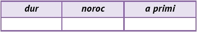

Lucrați în pereche! Citește replicile copiilor și rezolvă cerințele alăturate:
Cuvintele se pot grupa în categorii semantice (de sens).
Completează un tabel asemănător celui de mai jos, alegând pentru cuvintele date sinonimele potrivite din lista următoare: soartă, a obține, aspru, ursită, a căpăta, sever, destin, a încasa, brutal, fericire, crud, a admite, bunăstare, a include.
Identifică intrusul din seriile următoare:
Precizează, oral, câte un antonim potrivit pentru sensul cuvântului dulce din enunțurile următoare:
Notează enunțuri adecvate pentru omonimele cuvintelor: bloc, cardinal, cod, nod, han, ramă, pompă, trac.
Scrie un text, de minimum 100 de cuvinte, în care să integrezi paronimele:
Limba română
20